The French have style, an acknowledged fact. The French effortlessly keep up with fashion and just about anything else that catches one’s eye which is pretty much everything. In November the Parisian upscale Left Bank Bon Marche department store in the 7th arrondissement rue de Sevres is wall to wall with people looking for the latest eye-popping present to put under the tree and the famous windows are impossible to view with crowds five people deep. Antibes has its own style and while most Antibois do not have the spending power that many Parisians have, they still know how to spend what they do have.
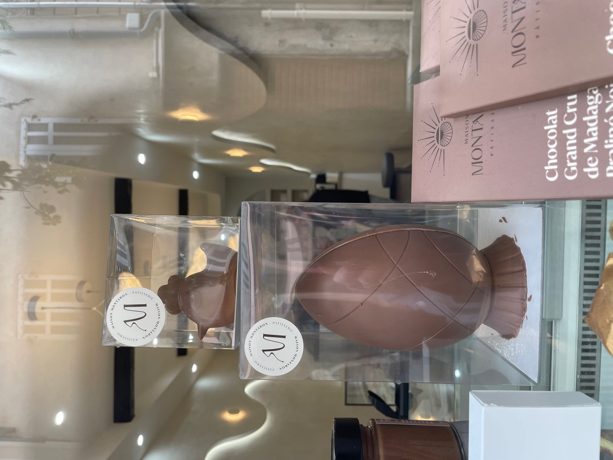
One example of spending is Easter with cuteness leading the race for the shoppers’ euros. This year Easter comes in early April not leaving much time for attracting shoppers as they recover from Christmas and Epiphany celebrations which hands merchants a challenge but they are up to the task. The Italian deli in the narrow bustling rue Sade with a florist, French version of Williams Sonoma and a Nomads Coffee put out their Easter decorations days ago. Pasta for Easter does not sound exactly spot on but they get points for originality.
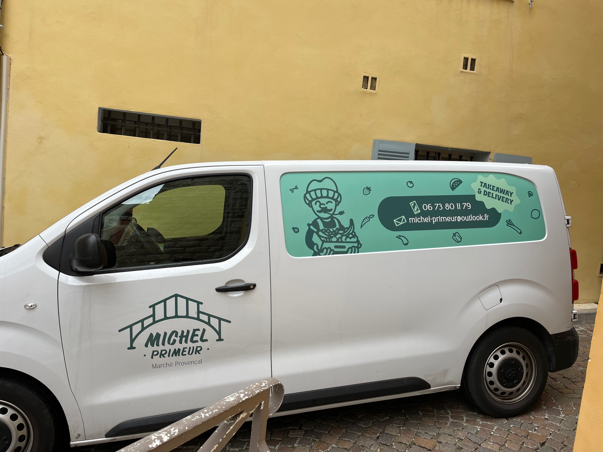
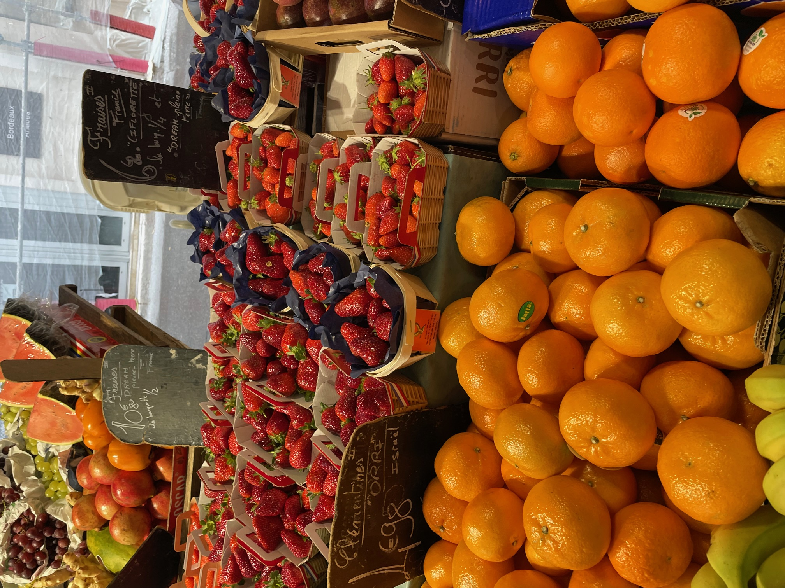
Now that Spring has arrived, so have the regattas which take place most every weekend. This past weekend was the beginning of a busy season and as is usually the case there is no wind; how this happens is a wonder but it is not unusual to see boats of at least two classes line up only to have jibs, spinnakers and main sails begging to be filled with a wind that never comes. The sailboats mysteriously make their way around the Pointe Bacon passing the Garoupe beaches where Picasso and the Murphys sun bathed and swam, the Chateau de la Croe where the Duke and Duchess of Windsor lived before the Second World War which Roman Abramovich now owns but can’t use as he is banned from France along with other Russian oligarchs, past the Bay of the Billionaires, then around the Pointe de l’Ilette, past Port de Crouton and Port Galice and finally to their goal of Juan les Pins hopefully in time for a celebratory lunch. Races other than sailing were held this past weekend: outrigger canoes which brings to mind Gaugin, Polynesia and the French influence there. It is a bit startling to see these elegant shells with multiple paddlers skimming the water when you see them for the first time but there is always something unexpected here.
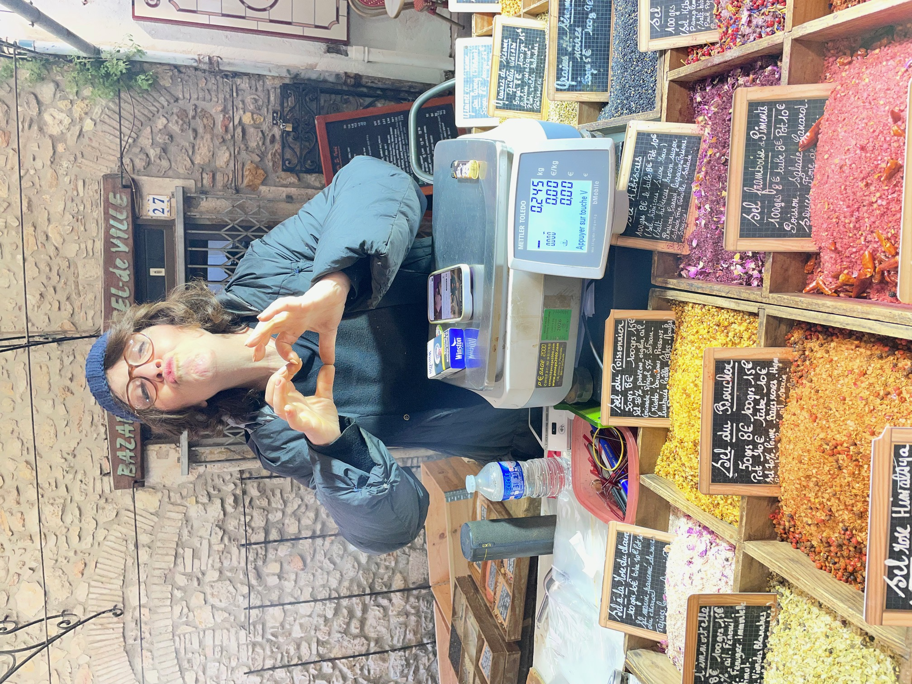
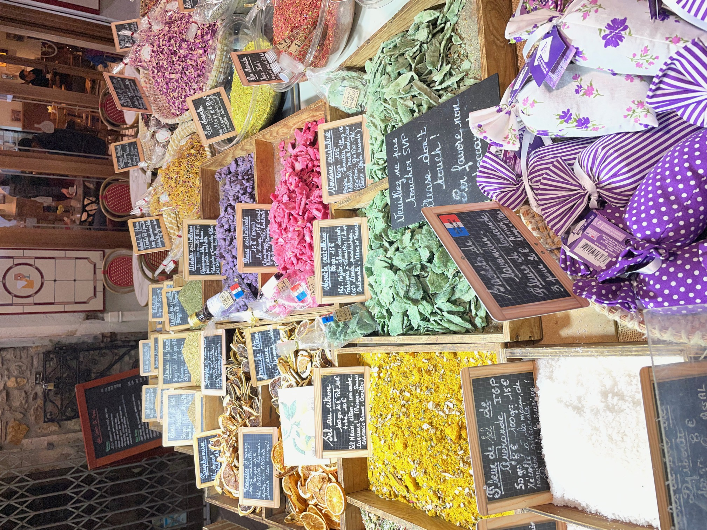
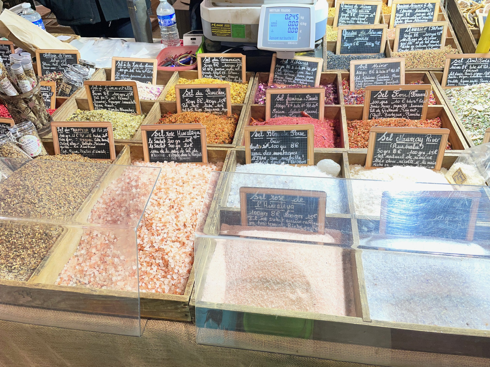
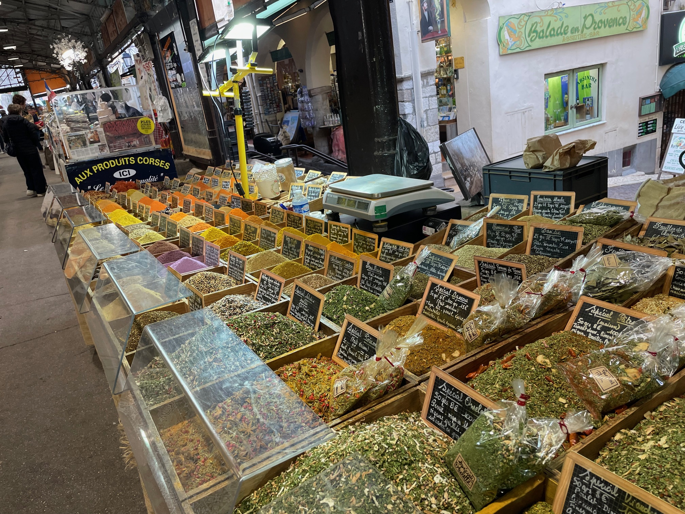
As Spring creeps in replacing winter with a bit of drizzle, the market has more stands than it did just a few days ago with some timidly setting up shop on Thursday, the big market day and returning on the weekend for the Saturday flea market which attracts shoppers from all over. In the Place National just behind the Gazebo next to the British woman who sells silver plate from long shuttered hotels, Mme. Davidoff and her faithful four legged companion Luna have elegantly monogrammed heavy linen sheets lovingly restored, washed and ironed begging for you to bring them home and hop into bed wondering who slept under the sheets before you did secretly hoping you might dream about them. Or maybe you would rather set a perfect table with immaculately restored napery. Mme Davidoff and Luna have it all.
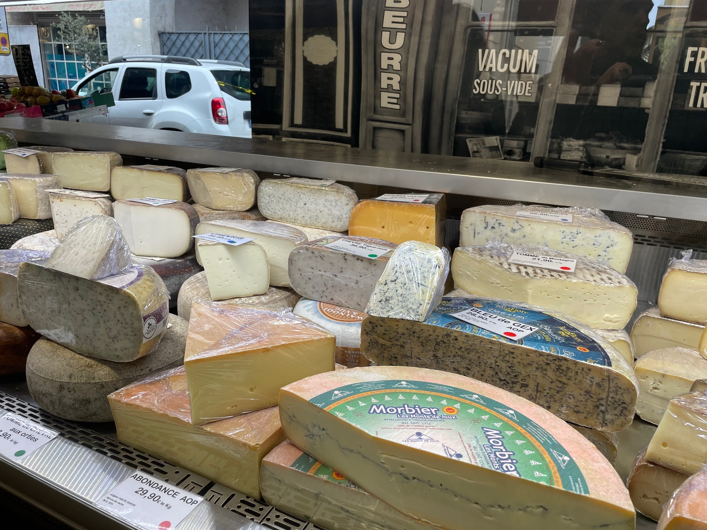
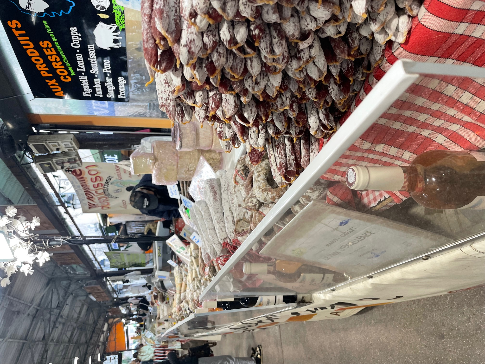
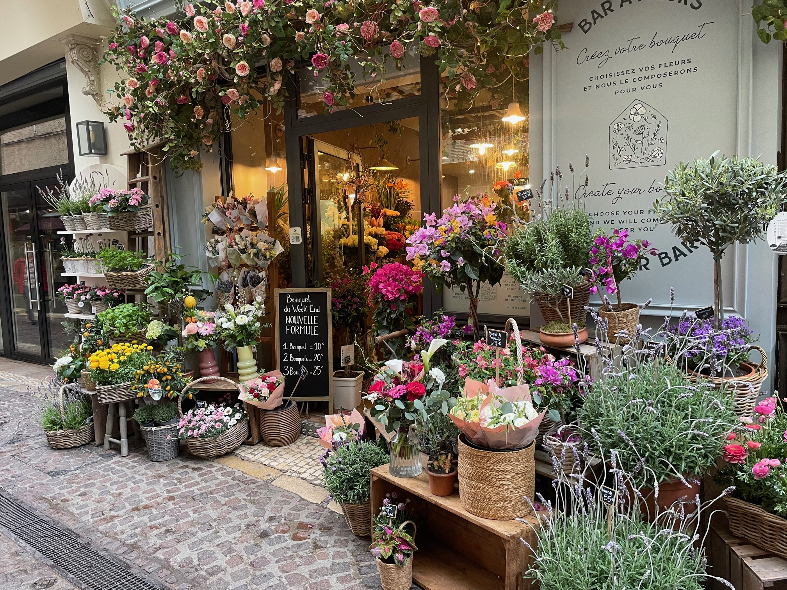
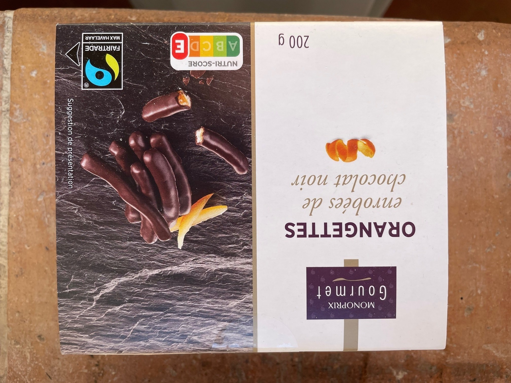
Monoprix, which is something like Target only a bit more upscale, takes holidays very seriously and Easter is no exception. Every day the themed display changes with new napkins, baskets, candles of all kinds: colorful bunnies and chicks and eggs of every size and color invite you to make your Easter table a joyous welcome of Spring. Promotions are in the forefront including champagne and yes, chocolates, especially orangettes which is orange peel encased in dark chocolate; I always keep this treat in my freezer in case of an emergency.
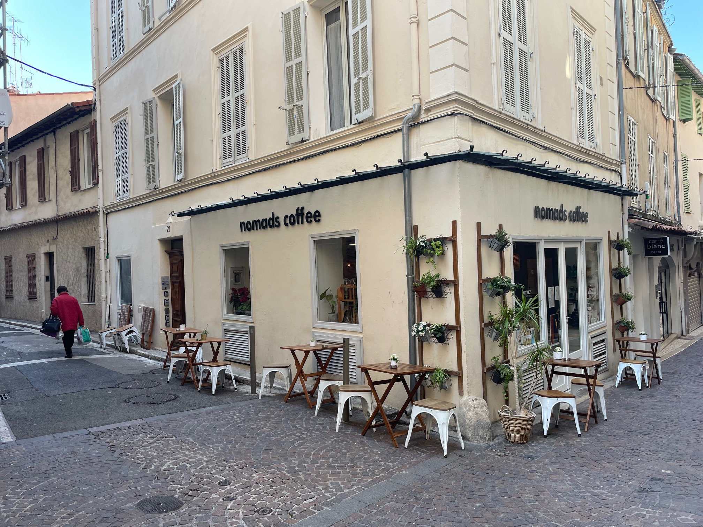
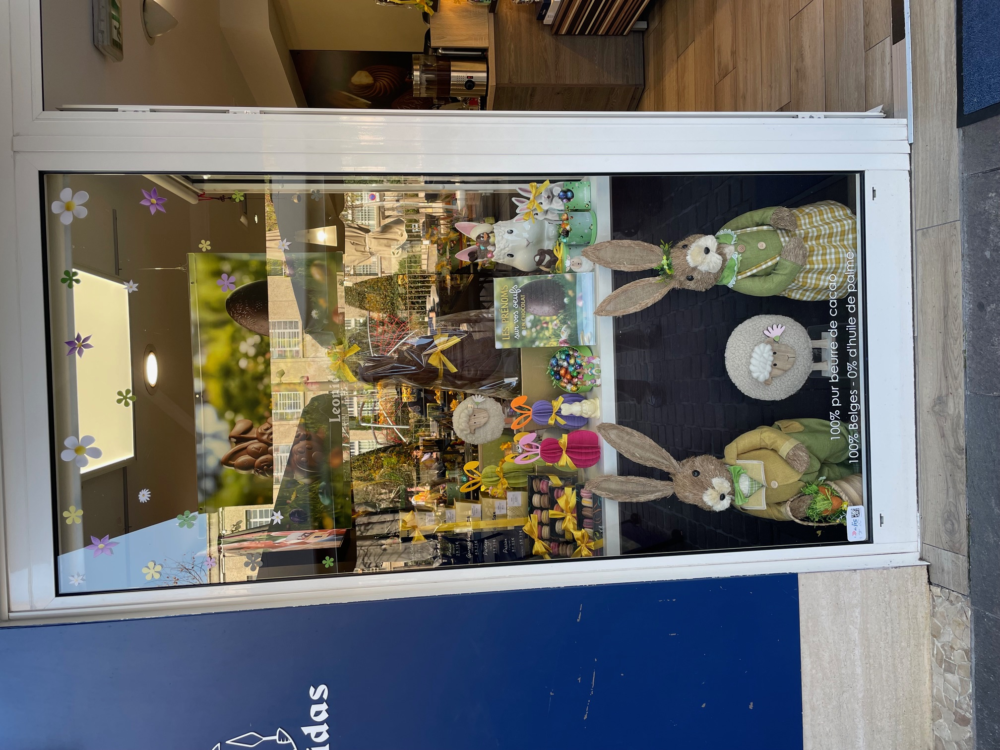
Patrizia has one of the largest and most strategically situated stands in the market, smack in the middle on an outside row next to the stairs opposite Tony who hawks Corsican products, mostly sausages and the ubiquitous Patrimonio wine. If you are looking for candied rose petals, mint leaves or violets from Tourettes Sur Loup, Patrizia’s stand is where to head. With some odd twenty different kinds of salt and herb blends that she mixes herself (move over Gibsons) she also carries pink Himalayan salt and salts from Australia, Egypt and Djibouti to name a few; you will also find almost any spice you can imagine and maybe some you never knew existed giving Spice House a run for its money. Patrizia loves to chat and especially wants to talk about Chicago where her daughter Sacha spent two years as an au pair for a family in Lincoln Park; she has been to Chicago twice and especially likes the candles from Bath and Body Works which I now bring her. Sacha is working part time in marketing at L’Oréal in Paris while she finishes her studies and helps her mother during her summer break wishing she had enough time to get back to her Lincoln Park family who misses her.
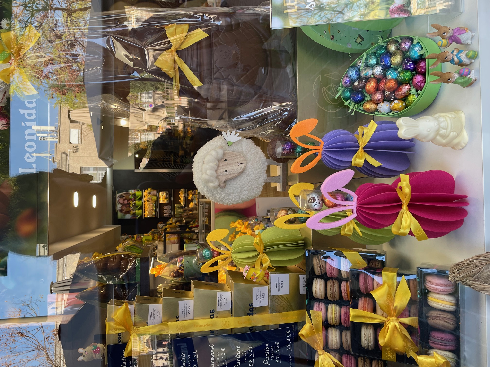
Alex and his brother have taken over the advantageously positioned major cheese stand and it is one of the most popular. Their father had a small cheese stand in the market for over 20 years and when the couple from the Var who had the large stand retired he jumped in and secured the stand for his boys. Cheese, butter, yogurt, eggs, you name it they have it and you can take it back to the States as they happily will vacuum seal your purchases. It is easy to get carried away; the selection is so large and tempting with at least 120 different cheeses according to Alex.
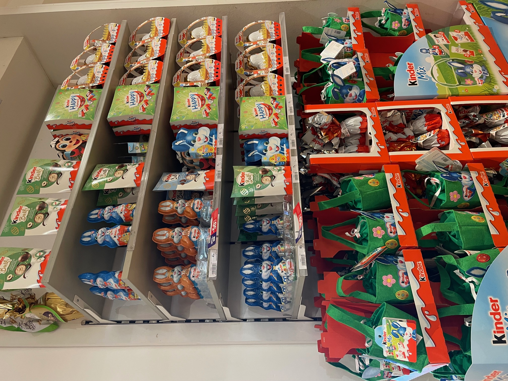
The other day Michel’s two year old granddaughter in the arms of her father was helping out, preparing her for the fourth generation of produce merchants. Michel’s mother-in-law has the stand across from Michel’s and is often helped by her grandchildren while grandson Jean Paul has become manager of restaurant and yacht orders for his father although he will gladly go into a discourse on strawberries and the different kinds they have and which ones he believes are the best while handing you samples to support his beliefs. Some of these luscious red berries are more perfumed than others, some are sweeter and must be a certain shade of red before they should be consumed. The best decision is to let Jean Paul make the choice for you and know that you have made the right choice since it was that of an expert, or at least someone who you hope knows what he is talking about and is not just making it up as he goes along because business is slow that morning.
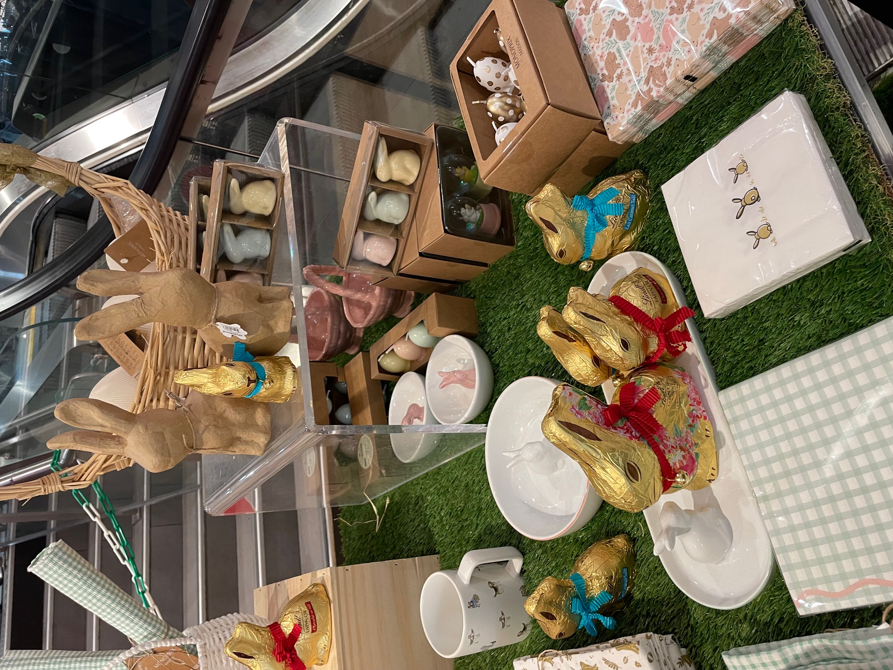
Garbage is a major concern here which it probably is in most places but with the heavy tourist season fast approaching the powers that be keep brainstorming on how to make things better especially with all the glass and plastic beverage bottles that will potentially be tossed who knows where. When the road in front of our house became pedestrian the dumpsters were removed from the square out our back door making it necessary to carry anything to be discarded down the rue du Bateau, taking a right on the rue de l’Orme then down a flight of seven stairs, then taking a left and down yet another flight of stairs only to have to walk around the parked motorcycles and finally getting to the dumpsters and bins for glass. Not a casual stroll and usually out of the way. There was a small bin next to the wall of the Picasso Museum’s garden in that square out our back door that begged to be used instead of making the trip to the dumpsters and I was able to feel no guilt if I would occasionally allow myself to be lazy and dump a glass or plastic bottle in the small bin. Then, one morning last week the little bin had been replaced with a double bin with garbage on one side and recycle on the other. These dual purpose bins are now all over town changing lives for the better which is not always the case when change comes.
Monday mornings are slow and streets wonderfully deserted with the market and many businesses closed all day and some only open in the afternoon making it a good day to do errands; the supermarkets especially are less jammed with shoppers making the checkout lines less of a nightmare as it seems every cashier has a break at the same time which coincides with peak shopping hours which is all day every day in the summer.
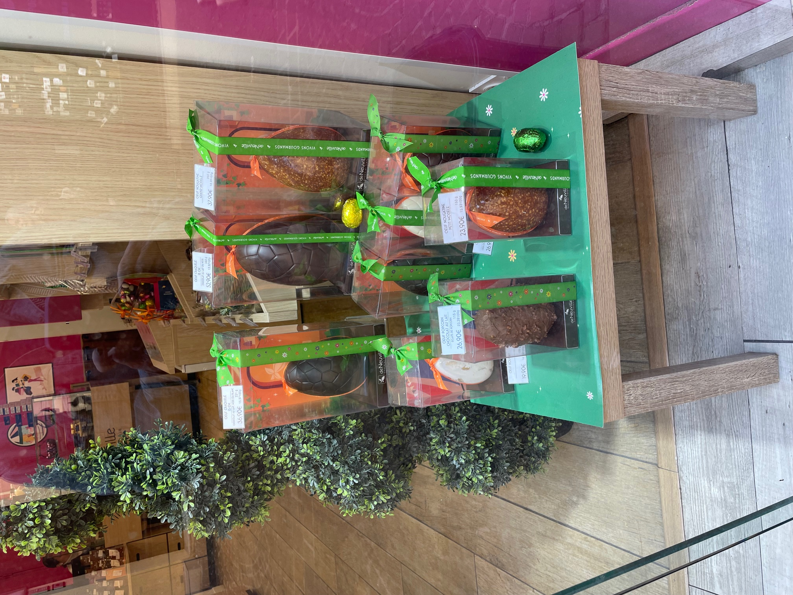
I have learned that even though the winter here can be mild and it is possible on a sunny day with no wind to have lunch on one of the many outdoor restaurant and café terraces in shorts and a tee shirt, soap bubbles are seasonal. I have a bubble machine that I fill with liquid soap from the toy store in the rue Lacan behind the old post office that will become a four star hotel one of these days. I was running out of the special soap for my machine this winter and it turns out that the toy store had no soap to be purchased but they would have more in April when everything here will come back to life and my bubble machine will crank out bubbles to the delight of all who pass by, making me smile.